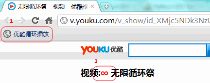
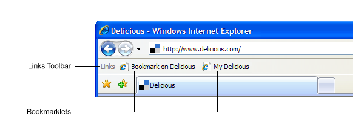
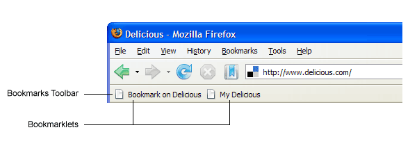
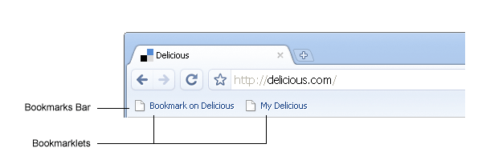
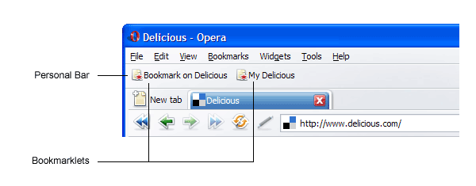
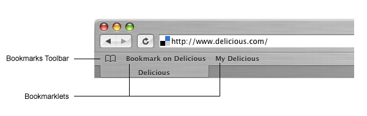

想让优酷上的视频循环播放？恭喜你找对地方了！
将下面的图标拖放到书签栏开始使用
将上面的按钮拖入书签栏，或将此链接优酷循环播放放入收藏夹中。如果你不知道具体应该怎么做那么请点击这里。

在浏览优酷上任意一个页面的时候，点击书签栏上的 优酷循环播放，或者再收藏夹中打开次链接也可以。之后再页面上视频标题前面会出现如下图所示的图标，这样视频在播放快结束时会重新开始播放了。
如果你想取消循环播放，可以点击上图中的图标，当然直接关闭当前页面也行。
此脚本在Windows环境下的以下浏览器上测试过，都能正常使用:
已知问题
代码: https://github.com/jagt/youku-loop
参考: YoukuSS userscript, Delicious Bookmarklet Help
如果你遇到问题请联系 jagttt16@gmail.com 。
选择你当前所使用的浏览器:
如下图所示，打开 IE 的书签栏(右键点击菜单，勾选 收藏夹栏，对于 IE6 收藏夹边栏也可)。右键单击此链接 优酷循环播放 选择 添加到收藏夹，并将其保存到 收藏夹栏 中即可。

如下图所示，打开 FireFox 的书签栏(打开菜单中 选项 - 书签工具栏)。将次链接 优酷循环播放 拖放到书签栏上即可。

如下图所示，打开 Chrome 的书签栏(打开菜单中 书签 - 总是显示书签栏，或者使用快捷键 Ctrl-Shift-B)。将此链接 优酷循环播放 拖放到书签栏上即可。

如下图所示，打开 Opera 的个人菜单(打开菜单中 显示 - 书签)。将此链接 优酷循环播放 拖放到书签栏上即可。

如下图所示，打开 Safari 的书签栏(打开菜单中 显示 - 显示书签栏)。将此链接 优酷循环播放 拖放到书签栏上即可。
